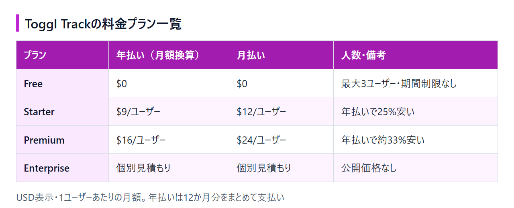

Toggl Track無料版でできること｜料金プランの違い・請求単価・日本からの支払い
Toggl Trackの公式の料金ページは英語だけで、日本語の解説記事には「無料は5人まで」「Premiumは$18」といった、現在の料金ページとは異なる情報も残っています。無料版のまま使い続けるか有料プランに上げるかは、今のプラン構成を押さえてから決めたいところです。
この記事では、無料版でできることと制限、有料プランで増える機能を整理します。フリーランスが気にする「請求単価はどのプランから付けられるか」、日本からの支払い方法と解約の条件も扱います。選ぶプランは、記録した時間に単価を付けるかどうかと、利用人数でほぼ決まります。
結論：1人で時間を記録するだけなら無料版、請求単価を付けるならStarter
時間の記録そのものは無料版で最大3ユーザーまで使えます。ただし、請求単価の設定とCSV出力は有料プランの機能です。判断の分かれ目は「記録した時間を金額に換算する必要があるか」と「利用人数」の2つです。
無料版で足りる人：1〜3人で作業時間を記録する
自分の作業時間を把握したい個人や、3人以内の小さなチームなら、無料版で十分に回ります。記録はWeb・デスクトップ・スマホのどれからでもでき、サマリーや時間ログのレポートを見てPDFで出力できます。
Starterにする人：請求単価を付けたい、CSVで出力したい
時間単価で報酬を受け取るフリーランスは、Starterが最初の候補です。クライアントや案件ごとに単価を付けて金額を集計でき、データをCSVで取り出せます。取引先が1〜2社で、月末に時間へ単価を掛ける手計算が負担にならないなら、無料版のままでも請求はできます。4人以上で使うチームは、有料プランへの移行が必要です。
Premiumを検討する人：人件費や収益性まで管理したい
受託制作や代理店のように、案件ごとの採算を見たいチームはPremiumを検討します。人件費と収益性のレポート、固定報酬の案件管理、タイムシートの承認フローが加わります。
料金ページは英語のみで、上部の「Annual」と「Monthly」の切り替えによって表示される金額が変わります。年払いの金額も1か月あたりで表示されますが、実際には12か月分をまとめて支払います。
Toggl Trackの料金プラン（年払い・月払い）
有料プランは1ユーザーあたりの月額課金で、年払いを選ぶと月払いより安くなります。プランはFree・Starter・Premium・Enterpriseの4つです。

Free：最大3ユーザーまで無料
Freeは$0で、期間の制限なく使い続けられます。人数の上限は3ユーザーです。できることと制限は次の章で詳しく扱います。
Starter：年払い$9／月払い$12（1ユーザーあたり月額）
- 年払い：$9/ユーザー/月
- 月払い：$12/ユーザー/月
1ドル=158.1円換算（執筆時点の目安。為替で変動）では、年払いで約1,423円、月払いで約1,897円です。月払いなら毎月この金額を払いますが、年払いは1年分の前払いなので、1人で使う場合も$108（約17,075円）を一度に支払います。
Premium：年払い$16／月払い$24（1ユーザーあたり月額）
- 年払い：$16/ユーザー/月
- 月払い：$24/ユーザー/月
円に直すと、年払いで約2,530円、月払いで約3,794円です。
Enterprise：個別見積もり
Enterpriseは公開価格がなく、個別見積もりで金額が決まります。
年払いにすると月払いより安くなる（Starter 25%・Premium 約33%）
料金ページでは年払いに「Save 33.3%」と表示されていますが、これはPremium（$24→$16）の割引率です。Starterは$12→$9なので、割引は25%にとどまります。チームで使う場合は、1ユーザーあたりの額に人数を掛けた金額が請求額です。無料版の上限を超える4人でStarterを年払いにすると、$9×4人×12か月＝$432を一度に支払う計算になります。
月払いと年払いの差は、Starterで1ユーザーあたり月$3、Premiumで月$8です。4人のチームがPremiumを使うなら、年間で$384の差になります。
Toggl Track無料版でできること・制限
時間を記録する機能は無料版でも一通りそろっています。制限がかかるのは、人数・レポートの範囲と形式・請求単価の3点です。
無料版でできること：Web・デスクトップ・スマホで時間記録
- Webブラウザ、デスクトップアプリ、スマホアプリでの時間記録
- GoogleカレンダーとOutlookカレンダーとの連携
- タスク、ボード、見積もりなどの簡易的な計画機能
- タグによる分類（数の上限なし）
スマホアプリも無料版で使えます。iPhoneとAndroidのアプリは、端末の言語設定に合わせて日本語で表示されます。外出先ではスマホで記録し、集計はPCのWeb画面で見るという使い分けも、無料のままでできます。
無料版の制限：3ユーザー・PDFレポート・請求単価なし
- 利用できるのは最大3ユーザーまで
- チーム単位のレポート（Team-level reports）は有料プランから。個人のレポートと、サマリー・時間ログのレポートは無料版でも見られる
- レポートの出力形式はPDFのみ。CSVとExcelは有料プラン
- 請求単価（Billable rates）は設定できない
4人目を招待する予定があるなら、最初から有料プランを前提に予算を組んでおきましょう。
有料プランはカード登録なしで30日間試せる
StarterやPremiumには30日間の無料トライアルがあり、クレジットカードを登録せずに始められます。トライアルは、最初に作成した組織で自動的に有効になる仕組みです。
これから登録する方は、この30日間で請求単価やCSV出力が自分の請求業務に合うかを、実際のデータで確かめられます。すでに無料版を長く使っている方は、トライアルの期間が残っていない場合があります。そのときは月払い（$12）で1か月だけ契約し、合わなければ期間内に解約するという試し方もできます。月払いは解約しても、請求期間の終わりまで有料機能を使えます。
有料プランで増える機能：StarterとPremiumの違い
Starterは「時間を金額に換える」ためのプラン、Premiumは「案件の採算を管理する」ためのプランです。料金は前の章で示したとおりなので、ここでは機能の差だけを見ていきます。
Starter：請求単価の設定、チームの売上レポート、CSV出力
- 請求単価（Billable rates）の設定と、それにもとづく正確な請求額の集計
- チーム単位の生産性・売上レポート
- レポートのCSV・Excel出力
- タイムライン表示やマイルストーンなど、無料版では使えない計画機能
料金ページのFAQは、無料版をフリーランスが1人で使う前提の設計だと説明しています。有料化で使えるようになる機能として挙がっているのが、請求単価やタイムライン表示です。
Premium：人件費・収益性レポート・固定報酬案件・承認フロー
- 人件費（Labor costs）の管理
- 収益性（Profitability）レポートとプロジェクトダッシュボード
- 固定報酬（Fixed fee）の案件管理
- タイムシートの承認フロー
- JiraやAsanaとの連携、SSO（シングルサインオン）
メンバーの工数と人件費を突き合わせて、案件ごとに黒字か赤字かを見たいチーム向けの構成です。
Enterprise：大規模組織向けの個別契約
Enterpriseは、料金ページの「Contact Us」から相談して導入するプランです。SSOやJira・Asanaとの連携はPremiumの時点で使えるので、それらが必要というだけならEnterpriseまで上げる必要はありません。
請求可能時間（billable）はどのプランから使えるか
請求可能な時間に単価を付けて金額を出す機能は、Starterから使えます。無料版でも時間は記録できますが、金額の集計まではできません。
無料版は時間の記録まで。単価を掛けた金額は出せない
無料版で分かるのは「どの案件に何時間使ったか」までです。請求額を出すには、PDFレポートの時間を見ながら、表計算ソフトなどで単価を掛ける作業が別に要ります。取引先が1〜2社で、月末に手計算しても負担にならない量なら、この運用でも回ります。
Starterなら単価を設定し、CSVで請求書作成に回せる
Starterでは、記録した時間を請求対象として扱い、単価を掛けた金額をレポートで確認できます。請求までの流れは次のとおりです。
- 案件ごとに時間を記録する
- 設定した単価で金額を集計する
- レポートをCSVで出力する
- 表計算ソフトで列を整え、会計ソフトや請求書作成ツールに転記・取り込みする
Toggl Trackが受け持つのは、時間と金額のデータを請求書作成の手前まで整えるところです。料金ページのプラン一覧に請求書作成の機能は載っていないため、請求書は普段使っている会計ソフトや請求書作成ツールで作ります。
固定報酬の案件や採算管理はPremium
「1案件いくら」の固定報酬で受けている仕事は、時間単価の請求とは管理の仕方が変わります。固定報酬の案件管理と収益性レポートはPremiumの機能なので、受け取った報酬に対して何時間かかったかを追いたい場合はPremiumが候補です。
日本からの支払い方法・請求書・消費税
日本からはクレジットカードで契約でき、年払いなら銀行振込も選べます。請求書と領収書はWebアプリからPDFで取得できます。
クレジットカードのほか、年払いなら銀行振込も使える
- クレジットカード
- Apple Pay、Google Pay（地域により利用できない場合あり）
- 銀行振込（年払いのみ。1年分の前払いで、Webアプリのサポートチャットから申し込む）
日本で発行されたカードやJCBが使えるかどうかは、公式の案内に記載がありません。JCBで払いたい場合は、申し込み画面で選択肢に出るかを見てから契約に進んでください。日本のカードでドル建ての料金を払うと、カード会社の外貨取扱手数料が上乗せされます。この手数料も予算に含めておいてください。
請求書・領収書はSubscription→HistoryからPDFで取得できる
請求書は発行時にメールでも届きます。後から必要になったときは、Webアプリの「Subscription」から「History」を開くと、PDFの請求書と支払領収書をダウンロードできます。
日本の適格請求書発行事業者の登録番号が記載されるかどうかは、公表されていません。海外SaaSの利用料にかかる消費税の扱いは事業の状況によって変わるので、経費処理の前に税理士に確認してください。
管理画面とサポートは英語、スマホアプリは日本語表示
Webアプリの管理画面は英語のみで、サポートとヘルプ記事も英語です。一方、スマホアプリは端末の言語設定に応じて日本語で表示されます。
Clockifyと料金を比べるとどう違うか
無料で使える人数はClockifyのほうが多く、請求単価や請求書作成を安いプランから使いたいならClockifyも候補になります。比べるのは、無料版の人数と、請求単価を使える最初のプランの2点です。
無料版の人数：Toggl Trackは3ユーザー、Clockifyは5ユーザーまで
- Toggl Track：Freeは最大3ユーザー。時間記録、カレンダー連携、簡易的な計画機能まで
- Clockify：Freeは5ユーザーまで。時間記録、タイムシート、カレンダー、モバイル・デスクトップアプリを含む
4〜5人のチームが無料で記録だけしたいなら、人数の上限はClockifyのほうに余裕があります。
請求単価と請求書作成が使える最安のプラン
- Toggl Track：請求単価はStarter（年払い$9/ユーザー/月）から。請求書作成は外部ツールで行う前提
- Clockify：請求単価はBasic（年払い$3.99/シート/月）から。請求書作成（Invoicing）はStandard（年払い$5.49/シート/月）から
金額の面では、請求単価を使える最初のプランはClockifyのほうが安く設定されています。請求書まで1つのツールで作りたい場合も、Clockifyには対応するプランがあります。
Toggl Trackのままでよい人、Clockifyも見てよい人
Toggl Trackを使い続ける理由があるのは、次のような人です。
- 外出先ではスマホアプリで記録したい（Toggl Trackのアプリは日本語で表示される）
- いずれ人件費や案件ごとの収益性、固定報酬の管理まで同じツールで行いたい（Premium）
- 無料版で記録してきたデータを、そのまま有料プランでも使い続けたい
Clockifyに移ると、それまでの記録の移し替えや、メンバーへの新しいツールの案内が必要になります。請求書は会計ソフトで作ると決まっている人なら、Toggl Trackで記録と集計を済ませる形で困りません。
一方、5人前後のチームで無料運用を続けたい人や、時間の集計から請求書の発行までを1つのツールで済ませたい人は、Clockifyも比べておきましょう。有料プランのトライアルは、Toggl Trackの30日間に対してClockifyは7日間です。管理画面の日本語表示まで含めて選ぶなら、Clockify以外の候補も並べて比べると判断がつきます。
解約・ダウングレードの手順と注意点
解約はWebアプリから自分で手続きでき、請求期間の終わりまでは有料機能を使えます。ただし原則として返金はありません。
解約はWebアプリのSubscription画面から自分でできる
- Webアプリで「Subscription」のページを開く
- 「My Plan」の欄にある「Cancel Subscription」を押す
- 表示される確認画面を読み進めて確定する
問い合わせをしなくても、この3ステップで解約できます。
請求期間の終わりまで使え、原則返金はない
解約しても、すでに支払った請求期間の終わりまでは有料機能が使えます。システムエラーによる誤請求などを除き、途中解約による返金はありません。年払いは1年分の前払いなので、1年使い続けると決めてから選んでください。
解約後はFreeへ。3ユーザーを超えていると組織が停止する
請求期間が終わると、利用人数がFreeの上限内であればFreeプランに移ります。3ユーザーを超えている組織は停止状態になり、アクティブなユーザーを3人以内に減らすと解除されます。チームで使っている場合は、解約前にメンバーを整理しておけば停止を避けられます。
Freeに戻したあと6か月間使わずにいると、データは自動で削除されます。しばらく記録しない予定なら、必要な記録をPDFレポートで残しておきましょう。
Freeに戻るとレポートの出力はPDFだけになります。会計ソフトに渡すCSVが必要なら、請求期間が終わる前に書き出しておきましょう。
まとめ
Toggl Trackは、3人以内で作業時間を記録するだけなら無料版のまま使い続けられます。記録した時間に単価を掛けて請求額を出したり、CSVで会計ソフトに渡したりするならStarter、案件の採算や人件費まで管理するならPremiumが目安です。取引先が少なく、手計算で請求額を出せるうちは無料版で足ります。
これから登録する方は、クレジットカードを登録せずに30日間、有料機能を試せます。すでに無料版を使っている方は、請求単価が必要になった月に月払いで上げ、使い続けると分かってから年払いを検討してください。